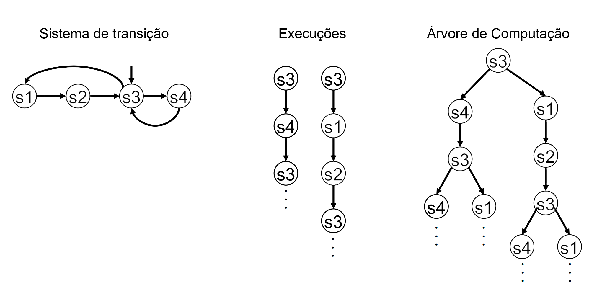
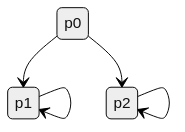
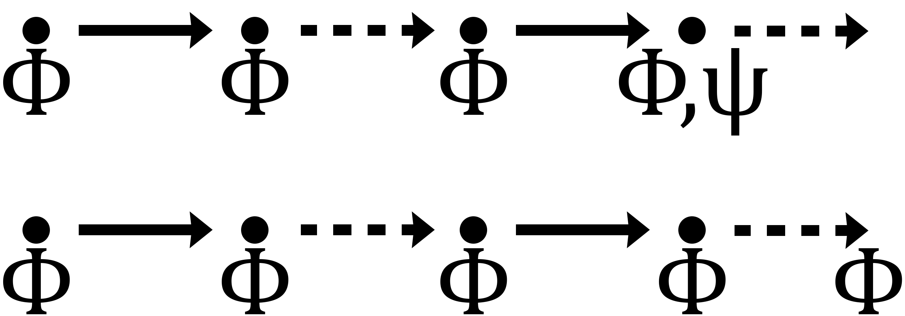
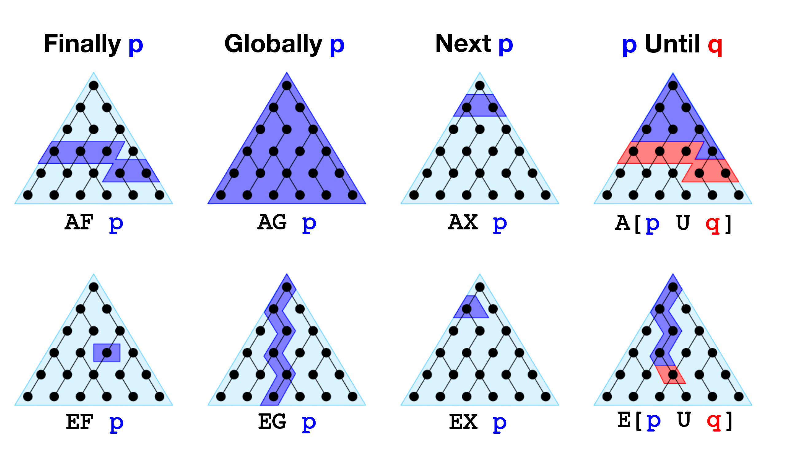
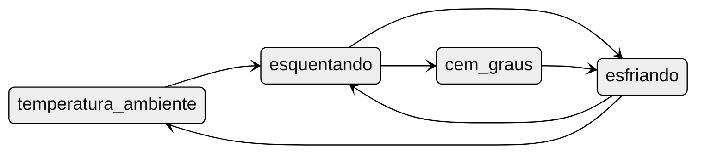

Checando propriedades com Lógica Temporal
Slides1 Model checking
1.1 Contexto
- Problema: É difícil pensar em todos os cenários,
principalmente em sistemas concorrentes/distribuídos
- Solução: Diferentes níveis de verificação
- Fuzzing e simulação
- Model checking
- Provas (com assistente de provas)
- Fuzzing e simulação
1.2 Interface de um model checker
Como um model checker é usado?
Duas entradas:
- Um modelo - uma máquina de
estado finita*
- Uma propriedade - uma fórmula de alguma lógica temporal
- Um modelo - uma máquina de
estado finita*
Três possíveis saídas
- Sucesso
- Contra-exemplo: Uma sequência de
estados que viola a propriedade
- Não há memória suficiente
Opcionalmente, também pode detectar deadlocks.
- Deadlock: o modelo não obedece a restrição de uma estrutura de Kripke, ou seja, existe um estado sem transição alguma saindo dele.
- Sucesso
1.3 Vantagens e Desvantagens
Vantagens
- Contra-exemplos
- Verificação parcial
- Processo automatizado
- Sequências infinitas de estados
Desvantagens
- Explosão de estados
- Não permite generalização (i.e. \(N\) processos)
- Model checkers em si não são verificados
No geral, é um método bom para encontrar falhas em software, que permite a verificação com certas restrições.
Comparado a testes e simulações aleatórias, pode ser mais eficiente em encontrar casos de borda onde falhas ocorrem.
1.4 Modelos
Linguagens de especificação fornecem diferentes abstrações para como definir uma máquina de estados. Exemplos: Redes de Petri, TLA+ (Temporal Logic of Actions+), CSP (Communicating Sequential Processes), Alloy, entre outras.
1.5 Propriedades - Lógica temporal
Dois operadores temporais principais:
- Eventualmente (\(\Diamond\)) ou
Finalmente (\(F\)): Cada semáforo deve
eventualmente ficar verde
- Sempre (\(\square\)) ou (\(A\)): O número do próximo estado é sempre maior que o número no estado anterior
Fórmulas de lógica temporal são sobre um comportamento (execução) do sistema modelado.
1.6 Propriedades - Invariantes
Invariantes são predicados sobre estados individuais do sistema. Um invariante é satisfeito se e somente se ele é verdadeiro para todos os estados do sistema.
Invariantes Indutivos são tipos especiais de invariantes que podem ser provados com indução matemática, isso é, sem necessidade de explorar todos os estados.
- Muito poderosos mas também difíceis de se definir
1.7 Contra-exemplo
Entradas:
- Modelo: 2 semáforos sem
controle de revezamento
- Propriedade: para cada semáforo, ele deve eventualmente ficar verde
Execução do model checker
Saída - Contra-exemplo:
- Semáforo 1 inicia vermelho, semáforo 2 inicia vermelho
- Semáforo 1 fica verde (e semáforo 2 permanece vermelho)
- Semáforo 1 fica amarelo (e semáforo 2 permanece vermelho)
- Retorna ao estado (1)
Ótimo artefato para reprodução de bugs e geração de testes automatizados.
1.8 Exercício: Qual dessas fórmulas pode ser um invariante?
- Ao fazer uma transferência bancária, eu acabo com menos dinheiro do
que tinha antes
- Ao ligar uma chaleira elétrica, ela eventualmente chegará a 100
graus
- Em um jogo da velha, a diferença entre o número de X e O não é maior do que 1
Dica: Um invariante é uma fórmula a ser avaliada em cada estado do sistema.
Resposta: 3
2 Lógica Temporal
2.1 Operadores Temporais - Unários
- \(\square\) ou G:
Globally, sempre.
- G \(\phi\): \(\phi\) deve ser verdadeiro por toda a
execução a partir de agora.
- Exemplo: Comida sacia a fome
- G \(\phi\): \(\phi\) deve ser verdadeiro por toda a
execução a partir de agora.
- \(\Diamond\) ou F:
Finally, eventualmente, no Futuro.
- F \(\phi\):
eventualmente (na execução a partir de agora), \(\phi\) deve ser verdadeiro.
- Exemplo: Eventualmente, terei fome
- F \(\phi\):
eventualmente (na execução a partir de agora), \(\phi\) deve ser verdadeiro.
- \(\bigcirc\) ou X:
Ne(x)t, próximo.
- X \(\phi\): \(\phi\) deve ser verdadeiro no próximo
estado.
- Exemplo: Logo após comer, tenho sede
- X \(\phi\): \(\phi\) deve ser verdadeiro no próximo
estado.
2.2 Operadores Temporais - Binários
- U: Until, até.
- \(\psi\) U \(\phi\): \(\psi\) deve ser verdade até que \(\phi\) seja verdade, sendo que \(\phi\) deve ser verdade no presente ou no
futuro.
- Exemplo: Eu tenho fome até eu comer alguma coisa
- \(\psi\) U \(\phi\): \(\psi\) deve ser verdade até que \(\phi\) seja verdade, sendo que \(\phi\) deve ser verdade no presente ou no
futuro.
- R: Release, libera.
- \(\psi\) R \(\phi\): \(\phi\) deve ser verdade até e incluindo o
momento que \(\psi\) se torna
verdadeiro. Se \(\psi\) nunca ficar
verdadeiro, \(\phi\) deve permanecer
verdadeiro para sempre.
- Exemplo: Ao comer chocolate, deixo de ter vontade de comer doce. Detalhe: Eu posso continuar com vontade de comer e acabar nunca comendo chocolate.
- \(\psi\) R \(\phi\): \(\phi\) deve ser verdade até e incluindo o
momento que \(\psi\) se torna
verdadeiro. Se \(\psi\) nunca ficar
verdadeiro, \(\phi\) deve permanecer
verdadeiro para sempre.
2.3 LTL e CTL
- LTL - Linear Temporal Logic (Lógica
Temporal Linear). Em LTL, as fórmulas são implicitamente universalmente
quantificadas. Propriedades que falam sobre a existência de uma execução
não podem ser expressadas.
- CTL - Computational Tree Logic (Lógica de
Árvore Computacional). CTL é uma lógica sobre a ramificação do
tempo.
2.4 LTL e CTL - Visualização

3 LTL
3.1 LTL - Linear Temporal Logic
Na lógica temporal linear (LTL), temos operadores para descrever eventos ao longo de uma única execução.
Seja \(AP\) um conjunto finito de proposições atômicas (i.e. \(\{ p_0, p_1, ..., p_n \}\)), o conjunto de fórmulas LTL sobre \(AP\) é definido indutivamente por:
- se \(p \in AP\) então \(p\) é uma fórmula LTL;
- se \(\psi\) e \(\phi\) são fórmulas LTL, então \(\neg\psi\), \(\phi \lor \psi\), \(\mathbf{X} \psi\), e \(\phi \mathbf{U} \psi\) são fórmulas LTL.
\[\phi ::= \bot\mid\top\mid p\mid \neg\phi \mid \phi \lor \psi \mid \mathbf{X} \psi \mid \phi \mathbf{U} \psi\]
3.2 Equivalências
Os operadores G, F e R podem ser definidos usando somente X e U.
- \(\mathbf{G}\psi \equiv \bot\mathbf{R}\psi
\equiv \neg\mathbf{F}\neg\psi\)
- \(\mathbf{F}\psi \equiv
\top\mathbf{U}\psi\)
- \(\phi\mathbf{R}\psi \equiv
\neg(\neg\phi\mathbf{U}\neg\psi)\)
- Até o momento que \(\psi\) fica
falso, \(\phi\) não pode ser
falso
- Até o momento que \(\psi\) fica
falso, \(\phi\) não pode ser
falso
- \(\neg\mathbf{G}\psi \equiv \mathbf{F}\neg\psi\)
3.3 Negações de fórmulas
Uma formula ser falsa não significa que sua negação é verdadeira. Por
exemplo, a fórmula a seguir não é necessariamente verdadeira:
\[\mathbf{F}p_1 \lor
\neg\mathbf{F}p_1\]
Exemplo:

3.4 Exercícios
Qual dos operadores temporais G (Globally), F (Finally), X (Next), U (Until) e R (Release) pode ser representado pelo diagrama a seguir?
Resposta: X, Next
Qual dos operadores temporais G (Globally), F (Finally), X (Next), U (Until) e R (Release) pode ser representado pelo diagrama a seguir?
Resposta: G, Globally
Qual dos operadores temporais G (Globally), F (Finally), X (Next), U (Until) e R (Release) pode ser representado pelo diagrama a seguir?
Resposta: U, Until
Qual dos operadores temporais G (Globally), F (Finally), X (Next), U (Until) e R (Release) pode ser representado pelo diagrama a seguir?
Resposta: F, Finally
Qual dos operadores temporais G (Globally), F (Finally), X (Next), U (Until) e R (Release) pode ser representado pelo diagrama a seguir?

Resposta: R, Release
3.5 LTL em Estruturas de Kripke
Uma fórmula LTL é verdadeira para uma estrutura de Kripke se ela é verdadeira no(s) estado(s) inicial(is).
Uma fórmula LTL é verdadeira em um estado se ela é verdadeira para todas as execuções iniciando naquele estado.
Ou seja, a fórmula deve ser verdadeira para todos as execuções (comportamentos) da estrutura.
4 CTL
4.1 CTL - Computational Tree Logic
A gramática a seguir define fórmulas em CTL (sendo \(p \in AP\)):
\[\phi ::= \bot\mid\top\mid p\mid \neg\phi
\mid \phi \lor \psi \mid A[\phi\mathbf{U}\psi]\mid
E[\phi\mathbf{U}\psi]\mid A\mid E\]
Todos os operadores temporais devem ser precedidos de A (All, Todo) ou E (Exists, Existe).
- A \(\phi\): \(\phi\) deve ser verdadeiro em todas as
execuções a partir do estado atual;
- E \(\phi\): Existe ao menos um caminho a partir do estado atual onde \(\phi\) é verdade.
4.2 Visualização

5 Verificando propriedades
5.1 LTL vs CTL
Atenção: \(LTL \nsubseteq CTL\) and \(CTL \nsubseteq LTL\)
- \(\mathbf{F}(\mathbf{G}p)\) é uma
fórmula LTL que não pode ser expressa em CTL.
- \(\mathbf{EX}p\) é uma fórmula CTL que não pode ser expressa em LTL.
5.2 Exemplo chaleiras - modelo

5.3 Exemplo chaleiras
PS: Release é V nesse sistema
CTL:
EF(cem_graus): true
esquentando -> AF cem_graus: false
esquentando -> EF temperatura_ambiente: true
EF(EG(!cem_graus)): true
LTL:
F(temperatura_ambiente | cem_graus): false
F(esquentando | esfriando): true- A não ser que haja uma auto-transição em
temperatura_ambiente
- A não ser que haja uma auto-transição em
5.4 Exemplo Adultos e Crianças - modelo
5.5 Exemplo Adultos e Crianças
CTL:
EF trabalho: true
AF trabalho: false
LTL:
F trabalho: false- Não é possível expressar nada como
EF trabalho
- Não é possível expressar nada como
formatura -> X(G(trabalho | adulto_dormir)): true
formatura -> X(trabalho U adulto_dormir): true
(F brincar) U formatura: false
5.6 Workaround para falta do existencial com invariantes
Na prática, quando queremos verificar o equivalente a EF p onde p é uma
proposição (não uma fórmula temporal), fazemos o seguinte:
Definimos
pcomo uma invariante (isso é,pdeve ser verdade em todos os estados)Rodamos o model checker
Invertemos o resultado:
- Se for "ok", é porque a propriedade
EF pé falsa
- Se for uma violação, é porque a propriedade
EF pé verdadeira (e o contra-exemplo é um exemplo de execução ondeF pé verdade).
- Se for "ok", é porque a propriedade